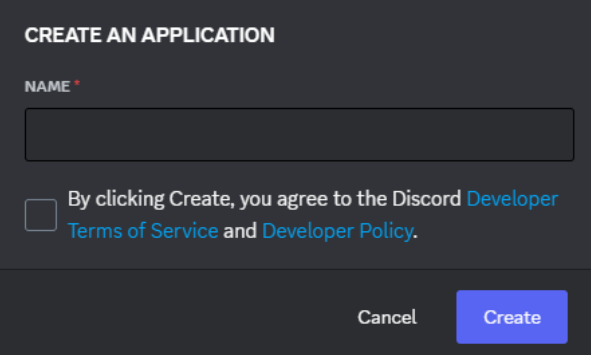

Okay, let me start by talking about the discord developer portal, which sounds quite self explanatory. It's where developers go to create their own, well, applications. Its main purpose is for Discord bots, but there’s other features you can use too.
For example, on the side bar, there’s an option called “Server Insights”. This allows you to choose a server you own, or are an admin for, and can see information about the server in general, as well as growth, engagement from users and the members within the community. To access the page shown on the image above, you'll need to sign into your account.
On the top right of the screen, next to your Discord profile picture, you can see a button labelled "New Application". Let’s go ahead and click it. 
We’re greeted with a small window asking for the name. You can call it anything you want, for this, I’ll just call mine “My Python Bot”.
I know, very creative.
We agree with the terms of service, and create our bot.

Jeez! That’s a lot of options! And the interface looks super organised too. I love it.
Okay, we created our bot!
Keep in mind that the name stated here is not the same as the bot’s name, and you can change the bot’s name and description in the “Bot” option on the side bar.
Let’s move on, shall we?
Let’s move on to discussing bot tokens. In short, they’re basically super long strings that are uniquely assigned to your Discord bot when it’s created. Think of it as your bot’s ID. These will be used to connect our bot to another website, which we’ll use to program our bot later on.
It’s important to note that you do not share your unique bot token with anyone, as anyone with the token can completely take over your bot, so it’s best to keep it to yourself. Which is what I’m going to do. I don’t want you all stealing my tutorial bot please. Thank you.
In the image above, you may notice the “Reset Token” button right next to the profile picture. If you go ahead and click to reset your bot’s token, it will first give you a popup message, basically confirming your choice, and then this screen comes up. Your bot’s token will be where the yellow line is, and they’ll be a copy button to retrieve it.
Also, the profile picture will be a completely random colour, but it seems I was lucky this time and got my favourite colour: yellow! Awesome! I mean, I need to stay professional.
Of course, you can change your bot’s profile picture anytime.
We can now move on to talking about the website: Replit!
Click here to be taken to Replit.
In the above image is Replit’s homepage. It’s used for basically anything coding related: deployment, selling your application, an AI coding bot, you name it. Of course, there is indeed a paid plan too, where you can see the button “Join Replit Core”, bottom left. For this tutorial, we won’t need the paid version, as we’re only using the website to program our Discord bot.Let’s create ourselves a new “Repl”.
We choose Python, name it whatever we want, and go ahead and create it. Once done, we are greeted with the following screen (well, after a bit of loading)